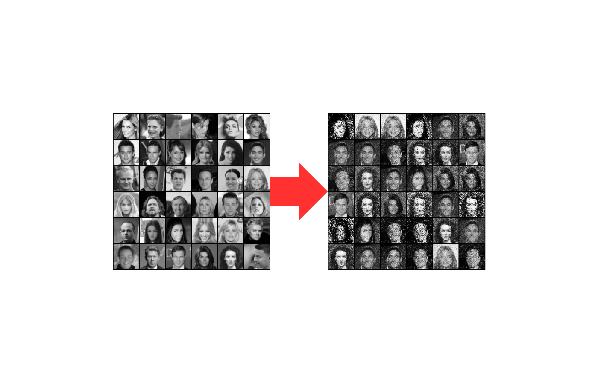

このプロジェクトは、大学のプログラミングと数値解析応用の授業で実施したGAN（Generative Adversarial Network）を用いた顔画像生成の課題です。深層学習を用いた画像生成モデルの構築に取り組みました。
プロジェクト名
GANを用いた顔画像生成モデルの実装
実施時期
2024年
目的・概要
本プロジェクトの目的は、GANを用いて実在する人物の顔画像を生成するモデルを構築することです。CelebAデータセットを使用し、64x64ピクセルのグレースケール画像を生成するモデルを実装しました。生成器（Generator）と識別器（Discriminator）の2つのニューラルネットワークを競わせることで、より本物らしい顔画像を生成することを目指しました。
使用技術・ツール
Pythonを使用し、主にPyTorch、torchvision、matplotlibなどのライブラリを活用しました。データの前処理、モデルの構築、学習、評価など、深層学習の一連のプロセスを実装しました。
データセット
CelebAデータセットから顔画像を取得し、以下の前処理を施しました：
- 画像の中心を178x178ピクセルでクロップ
- 64x64ピクセルにリサイズ
- グレースケール変換
- テンソル変換と正規化（[-1, 1]の範囲に）
モデル構成
実装したモデルの主な特徴は以下の通りです：
- 生成器（Generator）: 潜在空間（128次元）から画像空間（4096次元）への変換を行う6層のニューラルネットワーク
- 識別器（Discriminator）: 画像を入力として、本物か偽物かを判定する6層のニューラルネットワーク
- 学習率: 0.0003（Adam optimizer）
- バッチサイズ: 36
- エポック数: 10,000
成果・評価
学習の結果、以下のような成果が得られました：
- 生成された画像は、学習初期と比較してより本物らしい顔の特徴を獲得
- 識別器と生成器の損失関数の収束を確認
- 定期的な画像生成による学習の進捗の可視化
課題と改善点
プロジェクトを通じて以下の課題と改善点を特定しました：
- 生成画像の解像度向上（128x128や256x256への拡大）
- カラー画像への対応
- より複雑なアーキテクチャ（DCGANなど）の導入
- 学習の安定性向上
制作過程
まず、CelebAデータセットの取得と前処理を行い、学習用のデータセットを構築しました。次に、PyTorchを用いて生成器と識別器のモデルを実装し、GANの学習ループを構築しました。学習中は定期的に生成画像を保存し、損失関数の推移をグラフ化することで学習の進捗を確認しました。また、生成された画像の品質を定性的に評価し、モデルの改善点を特定しました。